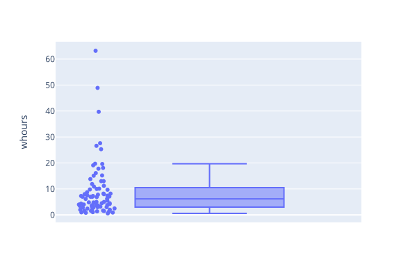

Introduction
Terms defined: box-and-whisker plot, jitter, learner persona, median, percentile
Are some programmers really ten times more productive than average? To find out, [Prechelt2000] had a group of programmers solve the same problem in the language of their choice, then looked at how long it took them, how good their solutions were, and how fast those solutions ran. The data is available online, and the first few rows look like this:
person,lang,z1000t,z0t,z1000mem,stmtL,z1000rel,m1000rel,whours,caps
s015,C++,0.050,0.050,24616,374,99.24,100.0,11.20,??
s017,Java,0.633,0.433,41952,509,100.00,10.2,48.90,??
s018,C,0.017,0.017,22432,380,98.10,96.8,16.10,??
s020,C++,1.983,0.550,6384,166,98.48,98.4,3.00,??
s021,C++,4.867,0.017,5312,298,100.00,98.4,19.10,??
s023,Java,2.633,0.650,89664,384,7.60,98.4,7.10,??
s025,C++,0.083,0.083,28568,150,99.24,98.4,3.50,??
…
The columns hold the information shown in Table 1.1.
The z1000rel and m1000rel columns tell us that
all of these implementations are correct 98% of the time or better,
which is considered acceptable.
| Column | Meaning |
|---|---|
| person | subject identifier |
| lang | programming language used |
| z1000t | running time for z1000 input file |
| z0t | running time for z0 input file |
| z1000mem | memory consumption at end of z1000 run |
| stmtL | program length in statement lines of code |
| z1000rel | output reliability for z1000 input file |
| m1000rel | output reliability for m1000 input file |
| whours | total subject work time |
| caps | subject self-evaluation |
The rest of the data is much easier to understand as a box-and-whisker plot
of the working time in hours (the whours column from the table).
Each dot is a single data point
(jittered up or down a bit to be easier to see).
The left and right boundaries of the box show the 25th and 75th percentiles respectively,
i.e., 25% of the points lie below the box and 25% lie above it,
and the mark in the middle shows the “median
(Figure 1.1).

So what does this data tell us about productivity? As [Prechelt2019] explains, that depends on exactly what we mean. The shortest and longest development times were 0.6 and 63 hours respectively, giving a ratio of 105X. However, the subjects used seven different languages; if we only look at those who used Java (about 30% of the whole) the shortest and longest times are 3.8 and 63 hours, giving a ratio of “only” 17X.
But comparing the best and the worst of anything is guaranteed to give us an exaggerated impression of the difference. If we compare the 75th percentile (which is the middle of the top half of the data) to the 25th percentile (which is the middle of the bottom half) we get a ratio of 18.5/7.25 or 2.55; if we compare the 90th percentile to the 50th we get 3.7, and other comparisons give us other values.
Who are these lessons for?
Every lesson should aim to meet the needs of specific people [Wilson2019]. As these learner personas suggest, these lessons assume readers can write short Python programs and remember some college-level mathematics:
-
Florian is a third-year undergraduate in computer science. They are enjoying their data structures and algorithms class, though they struggle a bit with the math when doing complexity analysis. They know data science is a hot topic, but find the examples in most online tutorials hard to relate to. This material will introduce them to modern computational statistical methods using examples they can relate to.
-
Yi Qing leads a four-person team at a website development and hosting company. They frequently have to estimate how long development of new features will take, and are also occasionally involved in selecting new programming tools and practices. This material will show them the answers we have to questions like these and why we believe those answers to be true.
If you know what a Python dictionary is and can explain the difference between an exponent and a logarithm, you are probably ready to start. We cover data tidying and visualization, descriptive statistics, modeling, statistical tests, and reproducible research practices, and then use those tools to explore key findings from empirical software engineering research.
What does this material cover?
We chose our topics to teach people how to analyze messy real-world data correctly, what we already know about software and software development, and why we believe it’s true. Our choice of examples was guided by [Begel2014], which asked several hundred professional software engineers what questions they most most wanted researchers to answer. The most highly-ranked questions include:
- How do users typically use my application?
- What parts of a software product are most used and/or loved by customers?
- How effective are the quality gates we run at checkin?
- How can we improve collaboration and sharing between teams?
- What are best key performance indicators for monitoring services?
- What is the impact of a code change or requirements change to the project and tests?
- What is the impact of tools on productivity?
- How do I avoid reinventing the wheel by sharing and/or searching for code?
- What are the common patterns of execution in my application?
- How well does test coverage correspond to actual code usage by our customers?
- What tools can help us measure and estimate the risk associated with code changes?
- What are effective metrics for ship quality?
- How much do design changes cost us and how can we reduce their risk?
- What are the best ways to change a product’s features without losing customers?
- Which test strategies find the most impactful bugs?
- When should I write code from scratch versus reusing legacy code?
Our lessons don’t answer all of these—in fact, most of them don’t have answers—but we hope we can help people get started.
[Begel2014] also asked what topics would be unwise for researchers to examine; all of the top responses were variations on, “Anything that measures individual employees’ productivity.” This belief reflects Goodhart’s Law: as soon as a measure is used to evaluate people, they adjust their behavior so that it ceases to be a useful measure.
We display source code like this:
import project
for observation in project.data:
analyze(observation)
report()
and Unix shell commands like this:
#!/usr/bin/env bash
for filename in *.dat
do
analyze $filename
done
Data and output are shown like this:
Package,Releases
0,1
0-0,0
0-0-1,1
00print-lol,2
00smalinux,0
01changer,0
Acknowledgments
We are grateful to:
- Steve McConnell and Robert Glass, whose books sent us down this road years ago [McConnell2004, Glass2002]
- The many contributors to [Oram2010]
- Alexandra Elbakyan for Sci-Hub, without whom this work would not have been possible.